数学及几何意义
图形学编程基本数学知识
Created by bigwhiteshark
数学
- 坐标系
- 点和直线
- 相关几何知识
- 三角函数
- 向量运算
- 矩阵运算
- 变换
笛卡儿坐标系
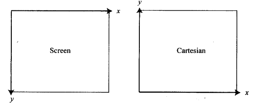

点
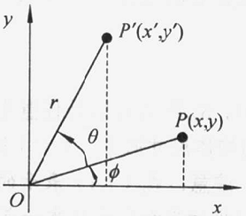

- 在2D 平面上用一个2 元组表示(x, y)
- 在3D 位置上用一个3 元组表示(x, y, z)
直线
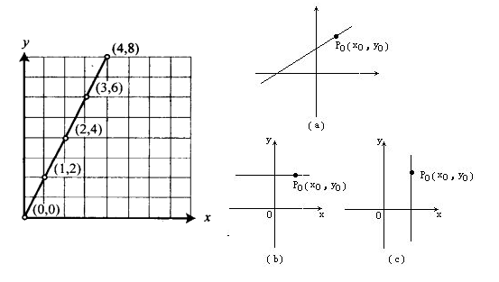
是点在空间内沿相同或相反方向运动的轨迹。由无数个点构成。
直线的方程式
| 名称 | 方程式 | 局限性 | 对称轴 |
|---|---|---|---|
| 点斜式 | `y-y_1 = k(x - x_1) (a≠0)` | `k`存在 | `(x_1,y_1)`是直线上一个定点，`k`为斜率 |
| 斜截式 | `y=kx+b` | `k`存在 | `k`是斜率，`b`是`y`轴上的截距 |
| 两点式 | `(y - y_1)/(y_2 - y_1) = (x - x_1)/(x_2-x_1)` | `(x_1≠x_2,y_1≠y_2)` | `(x_1,y_1)`、`(x_2,y_2)`是直线上的两个定点 |
| 截距式 | `x/a + y/b = 1` | `(a≠0,b≠0)` | `a`是`x`轴上的非零截距,`b`是`y`轴上的非零截距 |
| 一般式 | `ax+by+c = 0` | `a`、`b`不同时为0 | 当`b≠0`时，斜率是`-a/b`,`y`轴上的截距是`-c/b` |
直线的属性
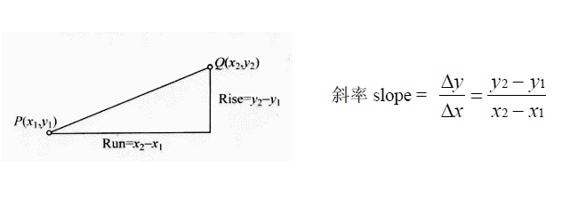
- 斜率相等的两条直线平行
- 斜率为负值，表示直线沿左上角到右下角延伸
- 斜率为正值，表示直线沿左下角到右上角延伸
- 斜率为0，直线为水平线，和x轴平行
- 分母为0，表示直线为垂直型，和y轴平行
- 相互垂直的直线斜率的积为-1
直线的几何意义
- 如果两直线的斜率不相等，则有一组解，该解为两直线交点
- 如果两直线的斜率以及在y轴上的截距相等，则有无穷组解，即两直线重叠
- 如果两直线的斜率以及在y轴上的截距不相等，则无解，即两直线平行
在相交中的应用
/*
输入：
point1:位于第一条直线上的一个2D点；
scope1:第一条直线的斜率
point2:位于第二条直线上的一个2D点
scope2:第二条直线的斜率
输出：相交的点
*/
function line_intersect(point1,scope1,point2,scope2){
var x = (scope1*point1.x - scope2*point2.x + point2.y - point1.y)
/(scope1 - scope2);
var y = scope1 * (x - point1.x) + point1.y;
return new Point(Math.ceil(x),Math.ceil(y));
}
两直线相交 示例.
相关几何知识
- 两点间的距离
- 两点的中点坐标
- 抛物线
- 圆和球
- 在碰撞检测中的应用
勾股定理
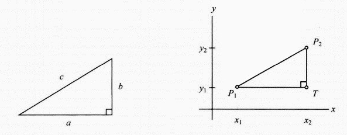
`a^2 + b^2 = c `
`a`、`b` 为直角三角形的两条直角边，`c` 为斜边。
两点间的距离
2D空间中的距离公式:
`P_1P_2 = sqrt((x_2-x_1)^2+(y_2-y_1)^2) .`
其中`P_1(x_1, y_1)`和`P_2(x_2, y_2)`,分别为线上的点。
3D空间中的距离公式:
`P_1P_2 = sqrt((x_2-x_1)^2+(y_2-y_1)^2+(z_2-z_1)^2) .`
其中`P_1(x_1, y_1, z_1)`和`P_2(x_2, y_2, z_2)`,分别为线上的点。
两点的中点坐标
2D空间中的中点公式:
`M((x_2+x_1)/2,(y_2+y_1)/2) .`
为`P_1(x_1, y_1)`和`P_2(x_2, y_2)`的中点。
3D空间中的距离公式:
`M((x_2+x_1)/2,(y_2+y_1)/2,(z_2+z_1)/2) .`
为`P_1(x_1, y_1, z_1)`和`P_2(x_2, y_2, z_2)`的中点。
抛物线
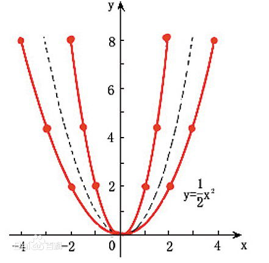
平面内，到定点与定直线的距离相等的点的轨迹叫做抛物线。其中定点叫抛物线的焦点，定直线叫抛物线的准线。
抛物线的方程式
| 名称 | 方程式 | 顶点 | 对称轴 |
|---|---|---|---|
| 顶点式 | `y=a(x - h)^2 + k (a≠0)` | `(h, k)` | `x = h` |
| 交点式 | `y=a(x-x_1)(x-x_2) (a≠0)` | 其中`x_1`，`x_2`是方程的两个实根。 | |
| 一般式 | `y=ax^2+bx+c (a≠0)` | `(-b/(2a), (4ac-b^2)/4a)` | `x = -b/(2a)` |
常数a 代表了抛物线的开口方向和开口大小。`a` 的绝对值越大，开口越小;`a`是正数，开口向上或向右，`a`是负数，开口向下或向左。
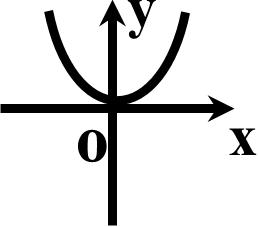 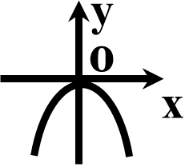 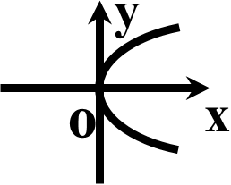 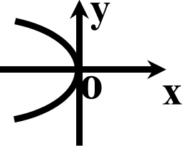圆
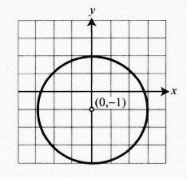
在同一平面内到定点的距离等于定长的点的集合叫做圆。
圆的方程式
| 名称 | 方程式 | 条件 | 圆心 | 半径 |
|---|---|---|---|---|
| 标准式 | `(x - h)^2 + (y - k)^2 = r^2` | `r > 0` | `(h,k)` | `r` |
| 一般式 | `x^2+y^2+Dx+Ey+F=0` | `D^2 + E^2 - 4F > 0 ` | `(-D/2,-E/2)` | `1/2sqrt(D^2 + E^2 - 4F)` |
圆的碰撞检测
设两圆方程分别为
`(x - h_1)^2 + (y - k_1)^2 = r_1^2`
`(x - h_2)^2 + (y - k_2)^2 = r_2^2`
如果`(h_2-h_1)^2+(k_2-k_1)^2 <= (r_1+r_2)^2` 则两圆相撞。
球
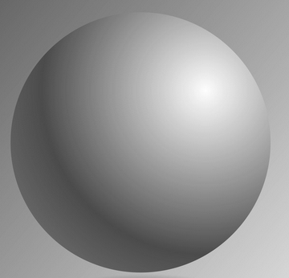
空间中到定点的距离等于定长的所有点组成的图形叫做球，如图右图所示的图形为球体。球体是一个连续曲面的立体图形，由球面围成的几何体称为球体。
球的方程式
| 名称 | 方程式 | 条件 | 球心 | 半径 |
|---|---|---|---|---|
| 标准式 | `(x - h)^2 + (y - k)^2 + (z - l)^2 = r^2` | `r > 0` | `(h,k,l)` | `r` |
球的碰撞检测
设两球方程分别为
`(x - h_1)^2 + (y - k_1)^2 + (z - l_1)^2 = r_1^2` `(x - h_2)^2 + (y - k_2)^2 + (z - l_2)^2 = r_2^2`
如果`(h_2-h_1)^2+(k_2-k_1)^2 + (l_2-l_1)^2 <= (r_1+r_2)^2` 则两圆相撞。
在碰撞检测中的应用
function checkball1Collision(ball1,ball2){
var radius1 = ball1.radius;
var radius2 = ball2.radius;
var x1 = ball1.x, y1 = ball1.y;
var x2 = ball2.x, y2 = ball2.y;
return Math.pow(y2-y1,2)+Math.pow(x2-x1,2) <= Math.pow(radius1+radius2,2);
}
碰撞检测 示例.
三角函数
- 角度与弧度
- 三角函数
- 三角函数的性质
角度与弧度
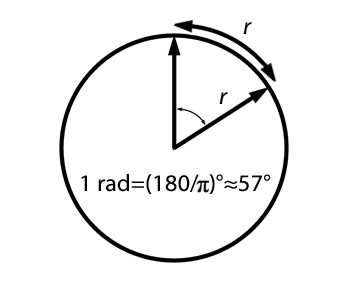
`角度 times (pi^R/180^circ) = 弧度`
`弧度 times (180^circ/pi^R) = 角度`
三角函数
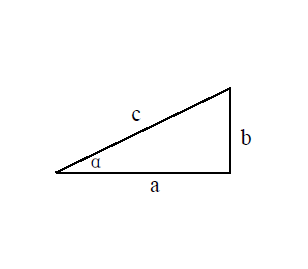
| 正弦 | 余弦 | 正切 |
|---|---|---|
| `sin(a)=b/c` | `cos(a)=a/c` | `tan(a)=b/a` |
| 正割 | 余割 | 余切 |
| `csc(a) = 1/sin(a) = c/b` | `sec(a) = 1/cos(a) = c/a` | `cot(a) = 1/tan(a) = a/b` |
常用角度的三角函数值
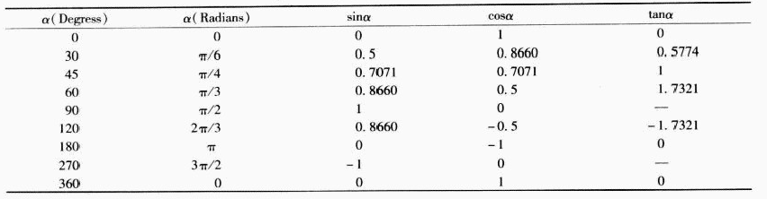
常用角度的三角函数值
三角函数：
角的正弦值在第一、第二象限是正值；
角的余弦值在第一、第四象限是正值；
角的正切值在第一、第三象限是正值；
反三角函数：
如果传入的参数是正值，那么它们的返回值都是正，即意味着该角位于第一象限；
如果传入的参数为负数，那么反正弦asin()和反正切atan()的返回角度将位于第四象限，而反余弦acos()的返回角度位于第二象限。
正弦函数的图像
对于正弦函数：
`y = Asin(Bx) + C`,振幅是`A`，周期是`360^circ/abs(B)`,偏移`x`轴 `C`
A 越大，振幅越高
B 越大，周期越小
三角函数的性质
| 单位圆性质 | `cos^2a + sin^2a = 1` |
| 正切和余切性质 | `tana=sina/cosa` 、`cota=cosa/sina` |
| 正弦函数的和与差 | `sin(a+b) = sinacosb + cosasinb` `sin(a-b) = sinacosb - cosasinb` |
| 余弦函数的和与差 | `cos(a+b) = cosacosb - sinasinb` `cos(a-b) = cosacosb + sinasinb` |
| 间接关系 |
`sin(90^circ+a)=cosa` 、`sin(180^circ-a)=sina` `cos(90^circ-a)=sina` 、`cos(180^circ+a)=cosa` |
向量运算
- 向量与标量
- 极坐标与笛卡儿坐标
- 向量加法与减法
- 标量与向量相乘
- 点乘与叉乘
向量与标量
标量 = 只有大小的量
向量 = 大小 + 方向
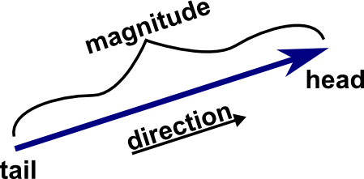
向量的表示
//二维向量的分量表现形式
function Vector2(){
this.x = x || 0;
this.y = y || 0;
}
//二维向量的极坐标表现形式
function Polar(mag,dir){
this.mag = mag；
this.dir = dir;
}
极坐标与笛卡儿坐标
直角坐标点是`(x,y)`
极坐标是`(ρ,θ)`，ρ表示极径，θ表示极径与极轴(相当于x的正半轴)夹角
`x=ρcosθ`
`y=ρsinθ`
由上述二公式，可得到从直角坐标系中x和 y两坐标如何计算出极坐标下的坐标 `θ=arctany/x`( x不等于0)
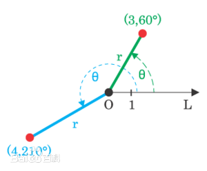
极坐标与笛卡儿坐标
极坐标
向量 `\vec {A} = ║A║ © θ`，其中，║A║为向量`\vec {A}`的模， `θ`为方向角
笛卡尔坐标(分量)
向量 `\vec {B} = b_1\hat i + b_2\hat j`，其中，`\hat i`和`\hat j`分别为x和y方向上的单位向量
极坐标转换成笛卡尔坐标
对于向量`\vec {A} = ║A║ © θ`，`A = a_1\hat i + a_2\hat j`。其中，`a_1 = ║A║cosθ`和`a_2 = ║A║sinθ`
笛卡尔坐标转换成极坐标
对于向量`\vec {B} = b_1\hat i + b_2\hat j`，`║B║= sqrt(b_1^2 + b_2^2)`,`θ=tan^-1(b_2/b_1)`
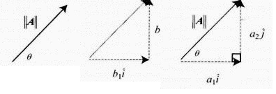
极坐标与笛卡儿坐标向量互转
//2D向量极坐标转换成向量分量形式
function vectorToPolar(polar) {
var mag = polar.mag;
var dir = polar.dir;
var x = mag * Math.cos(dir * Math.PI / 180);
var y = mag * Math.sin(dir * Math.PI / 180);
return new Vector2(x, y);
}
//2D向量分量形式转换成向量极坐标
function polarToVector(vector) {
var x = vector.x;
var y = vector.y;
var mag = Math.sqrt(x * x + y * y);
if (mag == 0) {
return new Polar(0, 0);
}
var dir = (180 / Math.PI) * Math.asin(y / mag);
//当角度位于第二或第三象限
if (x < 0) {
dir += 180;
} else if (x > 0 && y < 0) {
dir += 360;
}
return new Polar(mag, dir);
}
3D中的笛卡儿坐标(分量)
向量 `\vec {B} = b_1\hat i + b_2\hat j+ b_3\hat k`，其中，`\hat i`、`\hat j`和`\hat k`分别为x、y和z方向上的单位向量
向量加法与减法
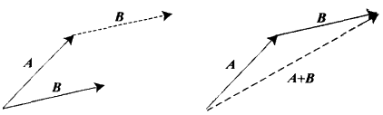
`\vec {A} + \vec {B} = (a_1+b_1)\hat i + (a_2+b_2)\hat j`
，其中`\vec {A} = a_1\hat i + a_2\hat j`，`\vec {B} = b_1\hat i + b_2\hat j`
`\vec {A} + \vec {B} = (a_1+b_1)\hat i + (a_2+b_2)\hat j + (a_3+b_3)\hat k`
，其中`\vec {A} = a_1\hat i + a_2\hat j + a_3\hat k`，`\vec {B} = b_1\hat i + b_2\hat j + b_3\hat k`
`A + B = B + A`
`║A + B║ \ne ║B║ + ║A║`
标量和向量相乘
`c vec {A} = c║A║ © θ`
`c \vec {A} = ca_1\hat i + ca_2\hat j`
向量的单位化
`\hat A = 1/(║A║) A = [a_1/(║A║) a_2/(║A║)]`
`\hat A = 1/(║A║) A = [a_1/(║A║) a_2/(║A║) a_3/(║A║)]`
向量的点乘
`A \cdot B = a_1b_1 + a_2b_2`,
其中，向量`A=[a_1 a_2]`，向量`B=[b_1 b_2]`
`A \cdot B = a_1b_1 + a_2b_2 + a_3b_3`,
其中，向量`A=[a_1 a_2 a_3]`，向量`B=[b_1 b_2 b_3]`
点乘可以获得两向量之间角度的信息。
① 如果A·B < 0，那么θ> 90°；
② 如果A·B = 0，那么θ= 90°；
③ 如果A·B > 0，那么θ< 90°。
其中θ是A 和B 的夹角。
两向量之间的夹角
`A·B = ║A║ ║B║ cosθ`
θ为两向量A与B之间的夹角
向量叉乘
`A \times B = [(a_2b_3 - a_3_b_2) (a_3b_1 - a_1b_3) (a_1_b_2 - a_2b_1)]`
叉乘只适用于3D 向量，返回的是一个向量，因此又称为向量积
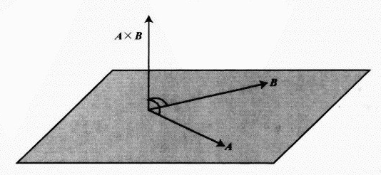
3D 向量间的夹角
`║A \times B║ = ║A║║B║sinθ`
其中，A、B为任意的3D向量，θ为他们之间的夹角
叉乘不满足交换率
`A \times B \ne B \times A`，但`A \times B = -(B \times A)`
平面的法线
平面法线 = `(A \hat \times B) = (A \times B) / (║A \times B║)`
矩阵运算
- 矩阵的定义
- 矩阵的加减运算
- 矩阵与标量相乘
- 矩阵相乘
- 矩阵转置
- 矩阵变换
- 组合变换
矩阵的定义
$$ A = \left[\begin{matrix} a_{11} & ... & a_{1j} & & a_{1N} \\ ... & & & & ... \\ a_{i1} & & a_{ij} & & a_{iN} \\ ... & & & & ... \\ a_{M1} & ... & a_{Mj} & & a_{MN} \\ \end{matrix}\right]$$
矩阵的维数：设矩阵有n 行m 列，那么矩阵的维数是n×m；
相等矩阵：
对于两个具有相同维数的矩阵，我们把同行同列的两个元素称为对应元素。
两矩阵相等的充要条件是：它们具有相同的维数，并且所有的对应元素都相同。
矩阵的定义
| 零矩阵(0) | 单位矩阵(E) | 对角矩阵 |
| $$\left[\begin{matrix} 0 & 0 & 0 \\ 0 & 0 & 0 \\ 0 & 0 & 0 \\ \end{matrix}\right]$$ | $$\left[\begin{matrix} 1 & 0 & 0 \\ 0 & 1 & 0 \\ 0 & 0 & 1 \\ \end{matrix}\right]$$ | $$\left[\begin{matrix} 5 & 0 & 0 \\ 0 & 1 & 0 \\ 0 & 0 & 8 \\ \end{matrix}\right]$$ |
矩阵的加减运算
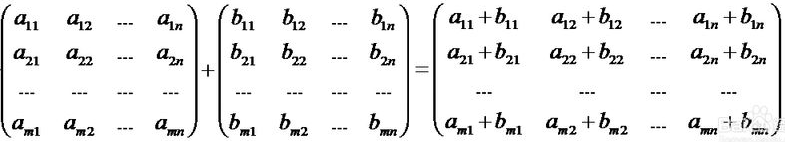
$$ A + B = \left[\begin{matrix} 1 & 3 & 5 \\ 4 & 1 & 3 \\ 2 & 1 & 2 \\ \end{matrix}\right] + \left[\begin{matrix} 4 & 3 & 2 \\ 1 & 3 & 5 \\ 6 & 5 & 9 \\ \end{matrix}\right] = \left[\begin{matrix} 5 & 6 & 8 \\ 5 & 4 & 8 \\ ? & ? & ? \\ \end{matrix}\right]$$
矩阵的加法满足下列运算律
- 交换律： A+B=B+A
- 结合律： A+(B+C)=(A+B)+C
- 存在零元： A+0=0+A=A
- 存在负元： A+(-A)=(-A)+A=0
矩阵与标量相乘
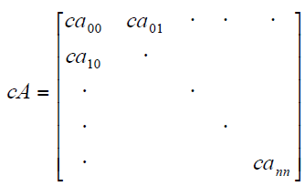
$$ cA = 3 \times \left[\begin{matrix} 1 & 3 & 2 \\ 2 & 4 & 6 \\ 5 & 2 & 2 \\ \end{matrix}\right] = \left[\begin{matrix} 3 & 9 & 6 \\ ? & ? & ? \\ ? & ? & ? \\ \end{matrix}\right]$$
数与矩阵的乘法满足下列运算律
- 1A = A
- `\lambda(A+B) = \lambda A + \lambda B`
- `(\lambda + \mu)A = \lambda A + \mu A`
- `(\lambda \mu)A = \lambda(\mu A) = \mu(\lambda A)`
矩阵相乘
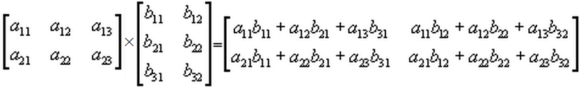
$$ A \times B = \left[\begin{matrix} 1 & 3 & 2 \\ 2 & 4 & 6 \\ \end{matrix}\right] \times \left[\begin{matrix} 3 & 1 \\ 1 & 2 \\ 7 & 4 \\ \end{matrix}\right] = \left[\begin{matrix} 20 & 15 \\ ? & ? \\ \end{matrix}\right]$$
矩阵相乘满足下列运算律
- 结合性 (AB)C=A(BC)
- 左分配性 A(B+C)=AB+AC
- 右分配性 (A+B)C=AC+BC
- 数与矩阵乘法的结合律： `(\lambda A)B = \lambda(AB) = A(\lambda B)`
矩阵转置
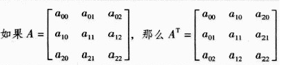
对于任意大小的矩阵 A 的转置矩阵表示为 `A^T`。 对于任意大小的矩阵，元素`a_(mn)` 在矩阵AT 中变为 `a_(nm)`
矩阵的转置运算满足下列运算律
- `(A^T)^T = A`
- `(A + B)^T = A^T + B^T`
- `(\lambda A)^T = \lambda A^T`
- `(AB)^T = B^TA^T`
对称矩阵
`n` 阶方阵 若满足条件：`A^T=A` ，则称 `A` 为对称矩阵；若满足条件：`A^T=-A` ，则称 `A` 为反对称矩阵。
对称矩阵具有如下性质:
- 对于任意 `m \times n` 矩阵 `A` ， `A^TA`为 `n` 阶对称矩阵；而 `A A^T` 为 `m` 阶对称矩阵
- 两个同阶（反）对称矩阵的和，仍为（反）对称矩阵；
- 如果两个同阶（反）对称矩阵 `A,B` 可交换，即 AB=BA，则它们的乘积 `AB` 必为对称矩阵，即 `(AB)^T = AB`
可逆矩阵
设`A ∈Mn（F）`, 若存在同阶矩阵`B` ，使`AB=BA=E`，则称A 为可逆矩阵,`B` 为`A`的逆矩阵，简称为` A` 的逆，记为 `B= A^-1`。
如果`A`是可逆矩阵，那么`A`的逆是唯一的。这是因为当`B ，C`都是`A`的逆时，有`AB=BA=E=AC=CA`, `B=BE=B(AC)=(BA)C=EC=C`。
对称矩阵具有如下性质:
- `(A^-1)^-1 =A`
- 如果 `A` 可逆，数`\lambda ≠ 0` ，那么` (\lambda A)^-1= 1/\lambda A^-1`
- 如果 `A` 可逆，那么,`A^T`也可逆，而且 ( A^T)-1=(A^-1)^T
- 如果`A ，B` 皆可逆，那么 AB 也可逆，且(AB)^-1=B^-1A^-1
两个`n`阶矩阵A与B的乘积`AB=E`时，一定有`BA=E`，从而`A，B`互为逆矩阵
矩阵变换
- 平移变换
- 缩放变换
- 错切变换
- 旋转变换
- 组合变换
二维平移
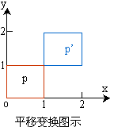
矩阵加法
$$ \left[\begin{matrix} x' \\ y'\\ \end{matrix}\right] = \left[\begin{matrix} x \\ y\\ \end{matrix}\right] + \left[\begin{matrix} d_x \\ d_y\\ \end{matrix}\right] = \left[\begin{matrix} x+d_x \\ y+d_y\\ \end{matrix}\right]$$
矩阵乘法
$$ \left[\begin{matrix} x' \\ y'\\ 1\\ \end{matrix}\right] = \left[\begin{matrix} 1 & 0 & d_x \\ 0 & 1 & d_y \\ 0 & 0 & 1 \end{matrix}\right] \times \left[\begin{matrix} x \\ y\\ 1\\ \end{matrix}\right] = \left[\begin{matrix} x+d_x \\ y+d_y\\ 1\\ \end{matrix}\right]$$
二维缩放
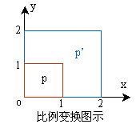
$$ \left[\begin{matrix} x' \\ y'\\ 1\\ \end{matrix}\right] = \left[\begin{matrix} S_x & 0 & 0 \\ 0 & S_y & 0 \\ 0 & 0 & 1 \end{matrix}\right] \times \left[\begin{matrix} x \\ y\\ 1\\ \end{matrix}\right] = \left[\begin{matrix} S_x \times x \\ S_y \times y\\ 1\\ \end{matrix}\right]$$
二维对称
|
以y轴为对称线的对称变换 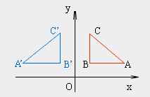 $$ \left[\begin{matrix} x'\\ y' \\ 1\\ \end{matrix}\right] = \left[\begin{matrix} -1 & 0 & 0 \\ 0 & 1 & 0 \\ 0 & 0 & 1\end{matrix}\right] \times \left[\begin{matrix} x \\ y\\ 1\\ \end{matrix}\right] = \left[\begin{matrix} -x \\ y\\ 1\\ \end{matrix}\right] $$ |
|
以x轴为对称线的对称变换 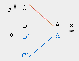 $$ \left[\begin{matrix} x'\\ y' \\ 1\\ \end{matrix}\right] = \left[\begin{matrix} 1 & 0 & 0 \\ 0 & -1 & 0 \\ 0 & 0 & 1\end{matrix}\right] \times \left[\begin{matrix} x \\ y\\ 1\\ \end{matrix}\right] = \left[\begin{matrix} x \\ -y\\ 1\\ \end{matrix}\right] $$ |
二维对称
|
以原点为对称的对称变换 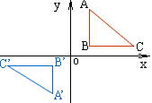 $$ \left[\begin{matrix} x'\\ y' \\ 1\\ \end{matrix}\right] = \left[\begin{matrix} -1 & 0 & 0 \\ 0 & -1 & 0 \\ 0 & 0 & 1\end{matrix}\right] \times \left[\begin{matrix} x \\ y\\ 1\\ \end{matrix}\right] = \left[\begin{matrix} -x \\ -y\\ 1\\ \end{matrix}\right] $$ |
|
以直线y=x为对称线的对称变换 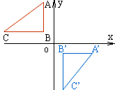 $$ \left[\begin{matrix} x'\\ y' \\ 1\\ \end{matrix}\right] = \left[\begin{matrix} 0 & 1 & 0 \\ 1 & 0 & 0 \\ 0 & 0 & 1\end{matrix}\right] \times \left[\begin{matrix} x \\ y\\ 1\\ \end{matrix}\right] = \left[\begin{matrix} y \\ x\\ 1\\ \end{matrix}\right] $$ |
二维对称
|
以直线y=-x为对称线的对称变换 $$ \left[\begin{matrix} x'\\ y' \\ 1\\ \end{matrix}\right] = \left[\begin{matrix} 0 & -1 & 0 \\ -1 & 0 & 0 \\ 0 & 0 & 1\end{matrix}\right] \times \left[\begin{matrix} x \\ y\\ 1\\ \end{matrix}\right] = \left[\begin{matrix} -y \\ -x\\ 1\\ \end{matrix}\right] $$ |
二维错切
|
沿x方向的错切 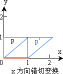 $$ \left[\begin{matrix} x'\\ y' \\ 1\\ \end{matrix}\right] = \left[\begin{matrix} 1 & c & 0 \\ 0 & 1 & 0 \\ 0 & 0 & 1\end{matrix}\right] \times \left[\begin{matrix} x \\ y\\ 1\\ \end{matrix}\right] = \left[\begin{matrix} x + cy \\ y\\ 1\\ \end{matrix}\right] $$ |
|
沿y方向的错切 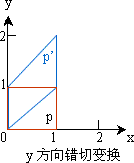 $$ \left[\begin{matrix} x'\\ y' \\ 1\\ \end{matrix}\right] = \left[\begin{matrix} 1 & 0 & 0 \\ c & 1 & 0 \\ 0 & 0 & 1\end{matrix}\right] \times \left[\begin{matrix} x \\ y\\ 1\\ \end{matrix}\right] = \left[\begin{matrix} x \\ y+cx\\ 1\\ \end{matrix}\right] $$ |
二维旋转
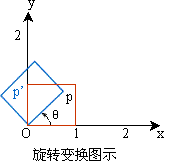
$$ \left[\begin{matrix} x' \\ y'\\ 1\\ \end{matrix}\right] = \left[\begin{matrix} cosθ & -sinθ & 0 \\ sinθ & cosθ & 0 \\ 0 & 0 & 1 \end{matrix}\right] \times \left[\begin{matrix} x \\ y\\ 1\\ \end{matrix}\right] = \left[\begin{matrix} xcosθ- ysinθ \\ xsinθ+ ycosθ\\ 1\\ \end{matrix}\right] $$
二维复合变换
绕任意点（或称基准点）（xr,yr）的旋转
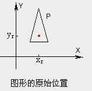
| 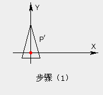 | => | 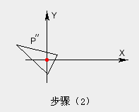 | => | 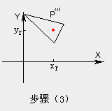 |
二维复合变换
$$\left[\begin{matrix} x' \\ y'\\ 1\\ \end{matrix}\right] =$$$$ \left[\begin{matrix} x \\ y\\ 1\\ \end{matrix}\right]$$ $$\left[\begin{matrix} 1 & 0 & -x_r \\ 0 & 1 & -y_r \\ 0 & 0 & 1 \end{matrix}\right] \times $$$$\left[\begin{matrix} cosθ & -sinθ & 0 \\ sinθ & cosθ & 0 \\ 0 & 0 & 1 \end{matrix}\right] \times$$$$\left[\begin{matrix} 1 & 0 & x_r \\ 0 & 1 & y_r \\ 0 & 0 & 1 \end{matrix}\right] \times$$$$ = \left[\begin{matrix} xcosθ & - ysinθ & ( 1-cosθ)x_r+y_rsinθ\\ sinθ& cosθ& (1-cosθ)y_r-x_rsinθ\\ 0 & 0 & 1\end{matrix}\right] $$
三维平移
矩阵加法
$$ \left[\begin{matrix} x' \\ y'\\ z' \\ \end{matrix}\right] = \left[\begin{matrix} x \\ y\\ z\\ \end{matrix}\right] + \left[\begin{matrix} d_x \\ d_y\\ d_z\\ \end{matrix}\right] = \left[\begin{matrix} x+d_x \\ y+d_y\\ z+d_z\\ \end{matrix}\right]$$
矩阵乘法
$$ \left[\begin{matrix} x'\\ y'\\ z'\\ 1\\ \end{matrix}\right] = \left[\begin{matrix} 1 & 0 & 0 & d_x \\ 0 & 1 & 0 & d_y \\ 0 & 0 & 1 & d_z \\ 0 & 0 & 0 & 1\end{matrix}\right] \times \left[\begin{matrix} x \\ y\\ z\\ 1\\ \end{matrix}\right] = \left[\begin{matrix} x+d_x \\ y+d_y\\ z+d_z\\ 1\\ \end{matrix}\right] $$
三维缩放
$$ \left[\begin{matrix} x'\\ y'\\ z'\\ 1\\ \end{matrix}\right] = \left[\begin{matrix} S_x & 0 & 0 & 0 \\ 0 & S_y& 0 & 0 \\ 0 & 0 & S_z & 0 \\ 0 & 0 & 0 & 1\end{matrix}\right] \times \left[\begin{matrix} x \\ y\\ z\\ 1\\ \end{matrix}\right] = \left[\begin{matrix} S_x \times x \\ S_y \times y\\ S_z \times z\\ 1\\ \end{matrix}\right] $$
三维旋转
绕 z轴
$$ \left[\begin{matrix} x'\\ y'\\ z'\\ 1\\ \end{matrix}\right] = \left[\begin{matrix} cosθ & -sinθ & 0 & 0 \\ sinθ & cosθ& 0 & 0 \\ 0 & 0 & 1 & 0 \\ 0 & 0 & 0 & 1\end{matrix}\right] \times \left[\begin{matrix} x \\ y\\ z\\ 1\\ \end{matrix}\right] = \left[\begin{matrix} xcosθ-ysinθ\\ xsinθ+ycosθ\\ z\\ 1\\ \end{matrix}\right]$$
三维旋转
绕 x轴
$$ \left[\begin{matrix} x'\\ y'\\ z'\\ 1\\ \end{matrix}\right] = \left[\begin{matrix} 1 & 0 & 0 & 0 \\0 &cosθ & -sinθ & 0 \\ 0 & sinθ & cosθ& 0 \\ 0 & 0 & 0 & 1\end{matrix}\right] \times \left[\begin{matrix} x \\ y\\ z\\ 1\\ \end{matrix}\right] = \left[\begin{matrix} x \\ ycosθ-zsinθ\\ ysinθ+zcosθ\\ 1\\ \end{matrix}\right]$$
三维旋转
绕 y轴
$$ \left[\begin{matrix} x'\\ y'\\ z'\\ 1\\ \end{matrix}\right] = \left[\begin{matrix} cosθ & 0 & sinθ & 0 \\ 0 & 1 & 0 & 0 \\-sinθ & 0 & cosθ & 0 \\ 0 & 0 & 0 & 1\end{matrix}\right] \times \left[\begin{matrix} x \\ y\\ z\\ 1\\ \end{matrix}\right]$$
三维复合变换
$$ \left[\begin{matrix} x'\\ y'\\ z'\\ 1\\ \end{matrix}\right] = \left[\begin{matrix} a & d & g & l \\ b & e & h & m \\c & f & i & n \\ p & q & r & s\end{matrix}\right] \times \left[\begin{matrix} x \\ y\\ z\\ 1\\ \end{matrix}\right]$$
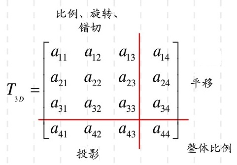
示例
要对一个三角形（中心<75，93>）以中心旋转左转90°，那么一共需要执行如下几步：
① 将三角形的中心移动到原点，即x 轴左移75 个单位，y 轴移动93 个单位。
② 对三角形进行旋转。
③ 将中心点移回<75，93>处。
$$ \left[\begin{matrix} x'\\ y'\\ 1\\ \end{matrix}\right] = \left[\begin{matrix} 1 & 0 & 75 \\ 0 & 1 & 93 \\ 0 & 0 & 1 \end{matrix}\right] \left[\begin{matrix} cos90^\circ & -sin90^\circ & 0 \\sin90^\circ & cos90^\circ& 0 \\ 0 & 0 & 1\end{matrix}\right] \left[\begin{matrix} 1 & 0 & -75 \\ 0 & 1 & -93 \\ 0 & 0 & 1 \end{matrix}\right] \left[\begin{matrix} x \\ y\\ 1\\ \end{matrix}\right] $$ $$ = \left[\begin{matrix} 0 & -1 & 168 \\ 1 & 0 & 18 \\ 0 & 0 & 1 \end{matrix}\right] \left[\begin{matrix} x \\ y\\ 1\\ \end{matrix}\right] $$